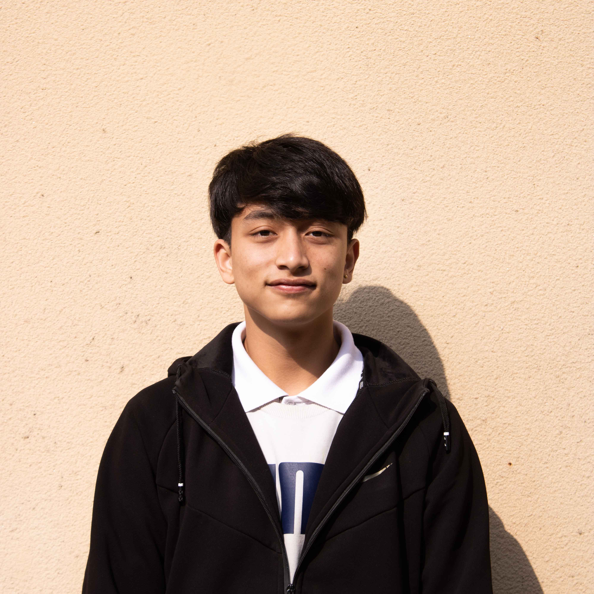

Home
Resume
Contact

Name: Kshitiz Shrestha
A dependable individual with an enthusiastic approach for each challenge.
Education
2010-04 - 2020-03
Secondary School
The Chandbagh School - CBSE - Bansbari, Kathmandu
Received 5-year scholarship on tuition fee
2020-08 - 2022-06
High School: +2
Uniglobe Higher Secondary School - Kamaladi
Awarded Top-5 Best student of the year.
Member of the Science club.
2022-08 - Current
Bsc. Computing(Hons)
Islington College - Kamalpokhari, Kathamdu
Work
2022 - Current
Front-end development
Skills
Dependable and Responsible
Flexible and Adaptable
Active Listening
Multitasking abilities
Planning and Coordination
Interests
Developing
Sports
Designing